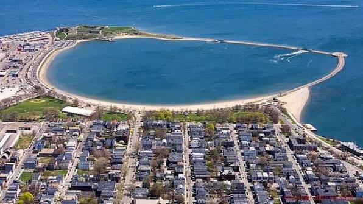

Pleasure Bay
August 1, 2026
Scanning the sand, some giant butterflies
feel no harm though the sun scorches their wing;
tethered to the sky in a slow wave swing,
they flutter like hankies waved for long goodbyes.
Surfing the sea, some graceful butterflies
are courting the wind in a daring fling.
Adrenaline springs from their single wing,
in a waltz of vibrant sails before my eyes.
Pleasure Bay's serenity belt girdles odd treasures.
I took a seat there – now I'm bound for adventures.
Yet with no wings, just a few words, what can I do?
I want to explore an ocean no butterfly can cross.
I want my words to share the glide of the tireless Albatross.
But where the wind will take me, I've got no clue!
· · ·
Context & Notes
This poem describes a beach in Boston, called Pleasure Bay, a scene for the kite surfers and windsurfers to explore their limits in a yet "serenity belt", a reassuring enclosed bay. The poet sits there, watching, but also longing for more, for this "ocean no butterfly can cross" and dreaming of taking a ride with Baudelaire's Albatross.
Comments
If this poem stirred something in you, share a thought below.